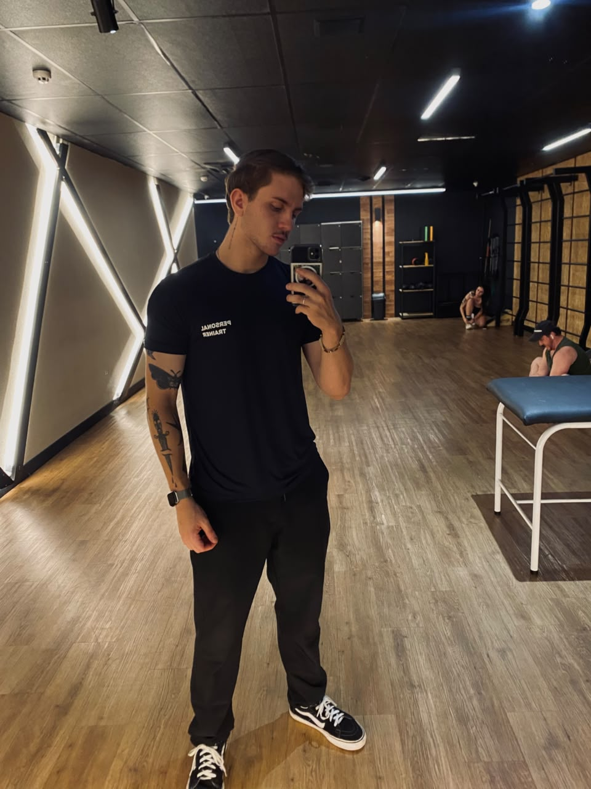

Antes
Depois
Relatos de alunos
Os depoimentos serão publicados em breve.
Pedro Neto monta seu treino de acordo com sua rotina, acompanha sua evolução e ajusta o plano conforme você progride.
Seu corpo, sua rotina e seus objetivos são o ponto de partida. A consultoria conecta planejamento e acompanhamento para dar sentido ao que você faz na academia.
Quero um plano para mimExercícios e organização pensados para seu objetivo e nível atual.
Condicionamento integrado ao seu programa de treino.
Movimento e preparação como parte do processo.
Um planejamento que evolui com a sua resposta ao treino.
Orientação para entender o plano e seguir com mais confiança.
Seu progresso como referência para os próximos passos.
Da primeira conversa aos ajustes ao longo do acompanhamento.
Na primeira conversa, Pedro conhece seu histórico de treino, rotina, restrições e objetivos.
Pedro prepara o treino para as próximas semanas e considera seus hábitos de alimentação e recuperação no planejamento.
Coloque o plano em prática e compartilhe sua evolução para orientar as revisões periódicas.
Antes e depois de alunos acompanhados por Pedro Neto.
Os depoimentos serão publicados em breve.
Este é Pedro Neto, o profissional à frente da consultoria. Conheça o antes e depois da própria trajetória de evolução.
Conheça o PedroA evolução é individual e depende de fatores como frequência, rotina e adesão ao planejamento.
Escolha entre 3, 6 ou 12 meses de acompanhamento.
3 MESES DE ACOMPANHAMENTO
Três meses para estabelecer uma rotina de treino com orientação.
R$ 499,90
Valor total · 3 meses de acompanhamento6 MESES DE ACOMPANHAMENTO
Seis meses para consolidar a rotina e ajustar o treino conforme a evolução.
R$ 899,90
Valor total · 6 meses de acompanhamento12 MESES DE ACOMPANHAMENTO
Doze meses para planejar o treino e acompanhar sua evolução ao longo do ano.
R$ 1.699,00
Valor total · 12 meses de acompanhamentoConverse com Pedro para confirmar condições e detalhes do acompanhamento.

PEDRO NETO / PERSONAL TRAINERProfissional de Educação Física
Formado em Educação Física, Pedro Neto atua como treinador há mais de cinco anos, com foco em saúde, autoestima e evolução individual.
O acompanhamento começa com uma avaliação do histórico de treino, da rotina de sono, da alimentação e dos objetivos. Pedro acompanha cada aluno de perto e ajusta o plano com base na evolução observada.
049370-G/PR
O MÉTODO
01 — TREINO
Força, mobilidade e condicionamento na dose certa para o seu corpo hoje — pensados para sustentar disposição e prevenir lesões, não só estética.
02 — NUTRIÇÃO
Orientação nutricional voltada a energia, imunidade e marcadores de saúde — não uma dieta restritiva de curto prazo.
03 — CONSULTORIA
Sono, estresse, carga de treino e evolução acompanhados de perto — ajustes constantes em vez de uma reavaliação genérica por mês.
O que o plano trabalha no dia a dia
Menos cansaço nas tarefas comuns, não só desempenho na academia.
Rotina ajustada para dormir melhor, base de qualquer resultado.
Mobilidade e força trabalhadas para proteger articulações e coluna.
Foco em manter autonomia e qualidade de vida ao longo do tempo.
“O treino é 1 hora. A recuperação são as outras 23. Priorize o sono.”PEDRO NETO — SAÚDE E RECUPERAÇÃO

NUTRIÇÃO PARA A SAÚDE
Carboidratos de qualidade, como aveia e banana, para sustentar o dia — não só a sessão de treino.
Proteína suficiente para músculos, cicatrização e defesas do corpo em dia.
Planejamento de refeições que cabe na sua vida real, sem restrição extrema.
Sim. O planejamento e o acompanhamento são realizados a distância. Na conversa inicial, Pedro explica como será a avaliação e a troca de informações durante o plano.
O treino é individualizado conforme sua experiência e suas necessidades. Conte seu histórico e eventuais restrições na avaliação inicial.
Os planos oferecem 3, 6 ou 12 meses de acompanhamento. Converse com Pedro para definir qual duração combina com seu objetivo.
Use um dos botões de contato, informe o plano de interesse e tire suas dúvidas sobre valores, condições e início do acompanhamento.
Conte onde você quer chegar. Vamos conversar sobre como a consultoria online pode fazer parte da sua rotina.
Quero começar minha consultoria